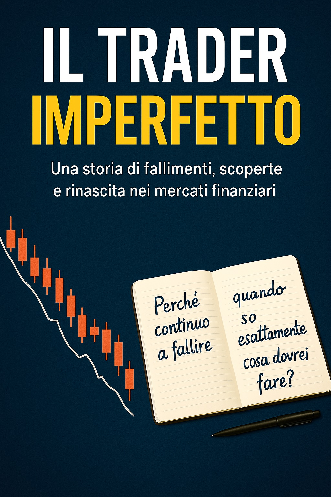

Una storia che va oltre il trading: un viaggio tra errori, emozioni e consapevolezza, scritto da Aldo.
Per offrire una comprensione approfondita delle dinamiche di una delle attività più complesse, il trading, e per mostrare il lavoro alla base del progetto PhyMap, mettiamo a disposizione gratuitamente i libri della serie "Il Trader Imperfetto", scritti da Aldo.
"Il Trader Imperfetto" è una storia che va oltre il trading: un viaggio tra errori, emozioni e consapevolezza. Attraverso le esperienze di un trader immaginario, il libro esplora il lato più difficile dei mercati, la mente, mostrando come paure, impulsi e convinzioni possano fare la differenza tra fallimento e crescita. Una guida narrativa per chi vuole capire davvero cosa significa fare trading… partendo da sé stessi.
Scrivi un'email indicando il volume che desideri ricevere: ti verrà inviata gratuitamente la copia in formato PDF.
phymap@protonmail.com
Scrivi una sola email indicando quali volumi desideri: ti verranno inviati gratuitamente in formato PDF.
Richiedi la serie completa